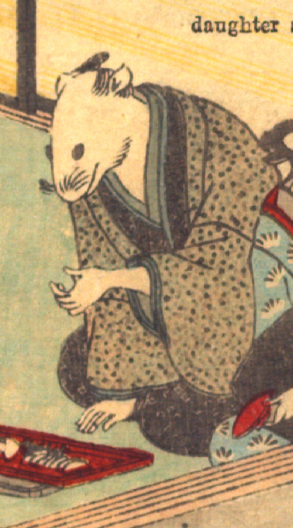

男の鼠。黒っぽい着物に灰色の羽織をまとい、座っている。右手は膝元につき、左手は徳利を持つような仕草をしている。手は人間のものである。手前に食べ物を載せた朱色の盆が置かれている。
著作者：David Thompson／出典：親書誌：U426_nichibunken_0112：Nedzumi no Yome-Iri／日付：2006／資源識別子：U426_nichibunken_0112_0002_0002
Copyright (c)2010- International Research Center for Japanese Studies, Kyoto, Japan. All rights reserved.